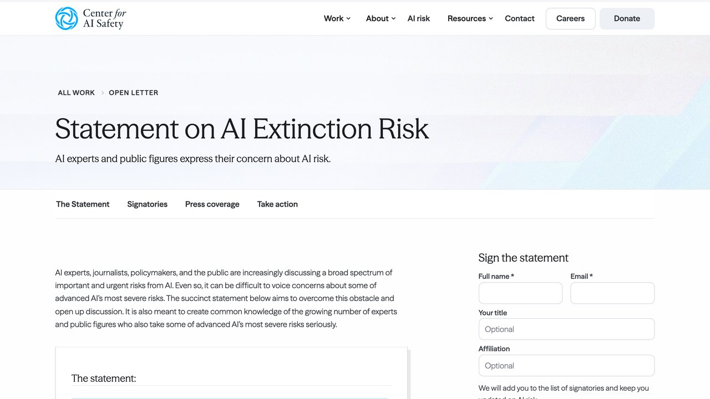

1. Qué dice exactamente el aviso
El ensayo de Amodei se centra en dos ejes: el papel de China en la carrera por la IA más capaz, y el riesgo de que el ritmo de desarrollo supere la capacidad del propio sector — y de los reguladores — para entender y controlar lo que está construyendo. No es un anuncio de que algo haya fallado ya; es una advertencia sobre la trayectoria si nada cambia.
Pide ralentizar el ritmo de avance y reforzar la coordinación sobre seguridad entre laboratorios, antes de que la capacidad de los modelos crezca más de lo que el sector puede supervisar con garantías.
No anuncia que Anthropic vaya a detener el desarrollo de nuevos modelos, ni describe un incidente concreto ya ocurrido que haya motivado la advertencia.
Sobre el primer eje — China — el argumento no es "hay que ganarles a toda costa", sino lo contrario de lo que suele asumirse: que una carrera descontrolada por llegar primero, sin coordinación sobre seguridad, aumenta el riesgo para todos los actores, ganador incluido. Sobre el segundo eje, el ensayo pide algo concreto y verificable, no una vaga petición de "más cuidado": mecanismos de coordinación entre laboratorios para compartir hallazgos de seguridad antes de que un problema se vuelva público, de forma parecida a como ya funciona el intercambio de vulnerabilidades en ciberseguridad tradicional.
2. Por qué llega precisamente ahora
Septiembre de 2026 ha sido un mes especialmente denso en lanzamientos — nuevos modelos de varios laboratorios distintos en cuestión de semanas, agentes con cada vez menos supervisión humana necesaria, valoraciones del sector en máximos históricos (lo repasamos en nuestro resumen de lanzamientos del mes). Un aviso de este tipo no aparece en el vacío: llega en el punto exacto del ciclo donde la velocidad del sector es más visible y más comentada que nunca, lo cual añade peso a la advertencia pero también invita a preguntarse por el momento elegido.
No es la primera vez que el propio sector pide frenar
En marzo de 2023, el Future of Life Institute publicó una carta abierta pidiendo una pausa de seis meses en el entrenamiento de modelos más potentes que GPT-4, firmada por miles de personas del sector, entre ellas nombres tan conocidos como Elon Musk y Steve Wozniak. Meses después, Geoffrey Hinton — uno de los investigadores considerados padres del aprendizaje profundo — dejó su puesto en Google citando explícitamente su preocupación por los riesgos de la IA que él mismo había ayudado a construir.
Ninguna de esas dos advertencias frenó nada de forma medible: ni hubo pausa de seis meses, ni el ritmo de lanzamientos se redujo en los años siguientes — más bien lo contrario. Ese patrón histórico no invalida el aviso de Amodei y Altman, pero sí es un dato relevante para calibrar expectativas: los avisos de seguridad desde dentro del sector tienden a generar mucho debate público y muy poco freno real en la práctica, salvo que vayan acompañados de regulación externa con capacidad de obligar, no solo de pedir.
«Que una advertencia sea genuina y que también beneficie la reputación de quien la hace no son cosas que se anulen entre sí. Pueden ser verdad las dos a la vez, y tratarlas como mutuamente excluyentes es la forma más rápida de sacar una conclusión equivocada.
— Redacción El Telar

3. El sector no reaccionó unido
George Kurtz, consejero delegado de CrowdStrike, respondió públicamente que asegurar el progreso de la IA importa más que frenarlo — una postura que no es marginal: buena parte del sector de ciberseguridad se beneficia directamente de que la IA siga avanzando rápido, porque eso genera más demanda de herramientas para protegerla. En bolsa, la reacción fue igual de dividida: los fabricantes de chips cayeron con fuerza mientras varias cotizadas de ciberseguridad subían con la misma noticia como excusa.
Esa división es la señal más honesta de todo el episodio: cuando una advertencia de seguridad tuviera un consenso obvio y unánime dentro del propio sector, probablemente ya se habría actuado sobre ella hace tiempo. Que exista desacuerdo genuino, y no solo ruido de marketing, es lo que hace que esta noticia merezca una lectura pausada en vez de un titular de veinte segundos.
El desacuerdo tampoco es nuevo ni exclusivo de esta semana. Yann LeCun, hasta hace poco máximo responsable de IA en Meta, lleva años defendiendo públicamente que el riesgo existencial de la IA está sobredimensionado frente a sus beneficios inmediatos, y que frenar el desarrollo por miedo a un escenario especulativo tiene un coste de oportunidad real. Poner esa postura junto a la de Amodei no es buscar un empate artificial — es mostrar que, dentro del reducido grupo de personas con más información técnica sobre el estado real de estos sistemas, el desacuerdo sigue siendo genuino, no cosmético.
4. Qué significa esto si usas IA a diario
Casi nada, en el sentido práctico e inmediato. El aviso habla de riesgos ligados a cuánto va a crecer la capacidad de los modelos en el futuro, no de que la herramienta que usas hoy para escribir un correo, resumir un documento o generar código sea repentinamente insegura para esa tarea. La distancia entre "hay que ir con más cuidado a medida que los modelos se vuelven más capaces" y "lo que usas hoy es peligroso" es enorme, y la mayoría de titulares la borran por completo.
Escribir, resumir, programar con ayuda de IA sigue teniendo el mismo perfil de riesgo que ayer — verificar el resultado sigue siendo tu trabajo, como siempre.
Avisos de este peso, viniendo de dentro del sector, suelen acelerar el debate regulatorio — eso sí puede cambiar reglas del juego en los próximos meses.
- Lee el resumen oficial del laboratorio (Anthropic u OpenAI publican sus propios avisos en texto completo) antes que la versión de un titular de terceros — la distancia entre ambos suele ser el problema, no el aviso en sí.
- En la Unión Europea, el AI Act ya establece obligaciones concretas para modelos de "riesgo sistémico" — es el marco regulatorio con más capacidad real de obligar, no solo de pedir, y donde de verdad conviene mirar si buscas algo más que declaraciones de intenciones.
- Desconfía de cualquier resumen que use la palabra "inminente" sin citar una fecha, un mecanismo o una fuente primaria concreta — es la palabra que más rápido convierte una advertencia prudente en un titular de pánico.
5. Cómo leer este tipo de noticias sin que te arrastre el titular
- Separa siempre lo que la fuente dice literalmente de lo que el titular resume — en este caso, "pedir ralentizar" se convirtió en muchos medios en "advierten de un peligro inminente", una distancia real entre el texto original y su resumen.
- Pregúntate quién más está de acuerdo, y quién no, dentro del propio sector — un desacuerdo genuino como el de CrowdStrike es más informativo que un consenso aparente que en realidad nadie cuestiona en público.
- Distingue una advertencia sobre el futuro de una alerta sobre el presente — la primera pide prudencia hacia delante, la segunda exigiría una acción inmediata, y confundirlas es la fuente más común de pánico injustificado.
El detector de titular exagerado
Cuatro rondas. En cada una, elige la frase más fiel a lo que de verdad pasó — no la que suena más dramática. Se corrige al instante, aquí mismo.
Ronda 1 — Sobre el ensayo de Amodei
Ronda 2 — Sobre la salida a bolsa de OpenAI
Ronda 3 — Sobre la reacción del sector
Ronda 4 — Sobre la reacción del mercado